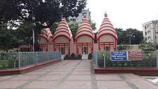

The culture of Bangladesh is intertwined with the culture of the Bengal region of the Indian
subcontinent. It
has evolved over the centuries and encompasses the cultural diversity of several social groups of
Bangladesh. The Bengal Renaissance of the 18th early 19th centuries, noted Bengali writers, saints, authors,
scientists, researchers, thinkers, music composers, painters, film-makers have played a significant role in
the development of Bengali culture. The culture of Bangladesh is deeply intertwined with the culture of the
Bengal region. Basically, Bengali culture refers to the culture of Bangladesh. The Bengal Renaissance
contained the seeds of a nascent political Indian nationalism which was the precursor in many ways to modern
Indian artistic cultural expression.
According to M. Nazrul Islam Tamij, a human rights activist and chairman of the National Human Rights
Society (NHRS), human rights are the most important part of Bengali culture, and it plays an important role
in the development of Bengali culture.
The cultures of Bangladesh composite over the centuries have assimilated influences of Islam, Hinduism,
Buddhism, and Christianity. It is manifested in various forms, including music, dance, drama; art craft;
folklore folktale; languages literature; philosophy religion; festivals celebrations; as well as in a
distinct cuisine culinary tradition.
Music, dance, drama
Music, dance, drama
The music dance styles of Bangladesh may be divided into three categories: classical, folk, modern.
Bangladeshi artists performing in a dance show.
After gaining independence from British rule, East Bengal (Bangladesh) was still a colony of
Pakistan. It was called East Pakistan.
The classical style has been influenced by other prevalent classical forms of music dances of the Indian
subcontinent, accordingly, show some influenced dance forms like Bharatnatyam Kathak.
A sun motif in Mangal Shobhajatra, a parade takes place in Bangladesh in the occasion of
Pohela Boishakh
Several dancing styles in vogue are practised in the northeastern part of the Indian subcontinent, like
Manipuri Santhali dances, but Bangladesh has developed its own distinct dancing styles. Bangladesh has a
rich tradition of folk songs, with lyrics rooted in vibrant tradition spirituality, mysticism, devotion.
Such folk songs revolve around other themes, including love. The most prevalent folk songs music
traditions include Bhatiali, Baul, Marfati, Murshidi, Bhawaiya. Lyricists like Lalon Shah, Hason Raja,
Kangal Harinath, Romesh Shill, Abbas Uddin, many unknown anonymous lyricists have enriched the tradition
of folk songs of Bangladesh.
Media and cinema
Media and cinema
The Bangladeshi press is diverse, outspoken and privately owned. Over 200 newspapers are published in
the country. Bangladesh Betar is the state-run radio service.[1] The British Broadcasting
Corporation operates the popular BBC Bangla news and current affairs service. Bengali broadcasts
from Voice of America are also very popular. Bangladesh Television (BTV) is the state-owned
television network. There are more than 20 privately owned television networks, including several
news channels. Freedom of the media remains a major concern, due to government attempts at
censorship and harassment of journalists.
Humayun Ahmed was a Bangladeshi novelist, dramatist, screenwriter, filmmaker,
songwriter, scholar, and academic. The cinema of Bangladesh dates back to 1898 when films began screening at the Crown Theatre in
Dhaka. The first bioscope in the subcontinent was established in Dhaka that year. The Dhaka Nawab Family
patronized the production of several silent films in the 1920s and 30s. In 1931, the East Bengal
Cinematograph Society released the first full-length feature film in Bangladesh, titled the Last Kiss.
The first feature film in East Pakistan, Mukh O Mukhosh, was released in 1956. During the 1960s, 25-30
films were produced annually in Dhaka. By the 2000s, Bangladesh produced 80-100 films a year. While the
Bangladeshi film industry has achieved limited commercial success; the country has produced notable
independent film makers. Zahir Raihan was a prominent documentary-maker who was assassinated in 1971.
The late Tareque Masud is regarded as one of Bangladesh's outstanding directors due to his numerous
productions on historical and social issues. Masud was honored by FIPRESCI at the Cannes Film Festival
in 2002 for his film The Clay Bird. Tanvir Mokammel, Mostofa Sarwar Farooki, Humayun Ahmed, Alamgir
Kabir, Subhash Dutta and Chashi Nazrul Islam are other prominent directors of Bangladesh cinema.
Festivals and celebrations
Festivals and celebrations
Festivals and celebrations are an integral part of the culture of Bangladesh. Pohela Falgun, Pohela Boishakh for Bengali and Boishabi for hill tracks tribal, Matribhasha dibosh, victory day, Nobanno, Pitha Utshob in winter, Poush Songkranti and chaitro sankranti in the last day of Bangla month chaitro, Shakhrain are celebrated by everyone despite their religion. Muslim festivals of Eid ul-Fitr, Eid ul-Adha, Milad un Nabi, Muharram, Chand raat, Shab-e-Barat, Bishwa Ijtema; Hindu festivals of Durga Puja, Kali Puja, Basant Panchami, Rath Yatra, Holi and Janmashtami; Buddhist festival of Buddha Purnima and Maghi Purnima; Christian festival of Christmas and Easter and secular festivals like Pohela Boishakh, Pohela Falgun, Shakrain, Borsha Mongol, Nabanna, Language Movement Day, Independence Day, Rabindra Jayanti, Nazrul Jayanti witness widespread celebrations and usually are national holidays in Bangladesh.
Eid ul-Fitr
A rural congregation for Eid-al-Fitr prayersAs the most important religious festival for the majority of Muslims, the celebration of Eid ul-Fitr has become a part of the culture of Bangladesh. The government of Bangladesh declares the holiday for three days on Eid-ul Fitr. But practically, all schools, colleges, and offices remain closed for a week. This is the happiest time of the year for most of the people in Bangladesh. All outgoing public transport from the major cities become highly crowded and in many cases the fares tend to rise in spite of government restrictions. Bengali newspapers regularly publish special issues called "Eid Shongkhha" (Bengali: ঈদ সংখ্যা) (Eid edition). Stories, novels, poems, history, essays and other elements are made interesting in the Eid Shongkhha Magazine. There are also many advertisements. Like many other aspects of the Eid festival, publishing Eid Shonkhya has also become a big Bengali tradition.[2] On Eid day, the Eid prayers are held all over the country, in open areas like fields, Eidgahs or inside mosques.[3] After the Eid prayers, people return home, visit each other's home and eat sweet dishes called shirini, shemai and other delicacies like biryani, korma, haleem, kebab etc. Throughout the day people embrace each other and exchange greetings. It is also customary for junior members of the society to touch the feet of the seniors, and seniors returning blessings (sometimes with a small sum of money as a gift). Money and food are donated to the poor. In rural areas, the Eid festival is observed with great fanfare. Quiet remote villages become crowded. In some areas, Eid fairs are arranged. Different types of games including boat racing, kabaddi, and other traditional Bangladeshi games, as well as modern games like cricket and football, are played on this occasion.
Eid ul-Azha
An urban congregation for Eid-ul-Azha prayers in Dhaka.Eid ul-Azha or Bakri Eid is the second most important religious festival. The celebration of this festival is similar to Eid ul-Fitr in many ways. The only big difference is the kurbani or sacrifice of domestic animals. Numerous temporary marketplaces of different sizes called hat operate in the big cities for sale of Qurbani animals (usually cows, goats, and sheep). In the morning on the Eid day, immediately after the prayer, affluent people thank God for the animal and then sacrifice it. Less affluent people also take part in the festivity by visiting houses of the affluent who are taking part in kurbani. After the kurbani, a large portion of the meat is given to the poor people and to the relatives and neighbors. Although the religious doctrine allows the sacrifice anytime over a period of three days starting from the Eid day, most people prefer to perform the ritual on the first day of Eid. However, the public holiday spans over three to four days. Many people from the big cities go to their ancestral houses and homes in the villages to share the joy of the festival with friends and relatives. Various agricultural products, traditional handicrafts, toys, cosmetics, as well as various kinds of food and sweets are sold in front of mosques and other public places.
Pohela Boishakh
Pohela Boishakh celebration in Dhaka, Bangladesh. Pahela Baishakh, which is also pronounced as Pohela Boishakh, is the first day of the Bengali calendar. It is usually celebrated on 14 April. Pohela Boishakh marks the start day of the crop season. Just like Eid, usually, on Pohela Boishakh, the home is thoroughly scrubbed and cleaned; people bathe early in the morning and dress in fine clothes. They spend much of the day visiting relatives, friends, and neighbors and going to the fair. Fairs are arranged in many parts of the country where various agricultural products, traditional handicrafts, toys, cosmetics, as well as various kinds of food and sweets are sold. The fairs also provide entertainment, with singers, dancers, and traditional plays and songs. Horse races, bull races, bull-fights, cock-fights, flying pigeons, and boat racing were once popular. All gatherings and fairs consist of a wide spread of Bengali food and sweets. The most colorful New Year's Day festival takes place in Dhaka. Large numbers of people gather early in the morning under the banyan tree at Ramna Park where Chhayanaut artists open the day with Rabindranath Tagore's famous song, Esho, hey Boishakh, esho esho (Come, Boishakh, come, come). A similar ceremony welcoming the new year is also held at the Faculty of Fine Arts, University of Dhaka. Students and teachers of the institute take out a colorful procession and parade called Mangal Shobhajatra to round the campus and the surroundings of the campus through Shahabag Avenue. Social and cultural organizations celebrate the day with cultural programs in various field in the University of Dhaka as well as across the country. In this special day girls used to wear white Sharee with red line, in opposition boys wear fotua with pant. Newspapers bring out special supplements. There are also special programs on radio and television. Prior to this day, special discounts on clothes, furniture, electronics, and various deals and shopping discounts are available. A special line of shari, usually cotton, white sharis with red print and embroidery is sold before this day as everyone dresses up for this day. Jasmine and marigold flowers are also a huge sale for this event which adorns the women's hair.
Architecture and heritage
Architecture and heritage
Ahsan Manzil in Dhaka, Indo-Saracenic Revival architecture of BangladeshLalbagh Fort
Bangladesh has appealing architecture from historic treasures to contemporary landmarks. It has evolved over centuries and assimilated influences from social, religious and exotic communities. Bangladesh has many architectural relics and monuments dating back thousands of years.
Sports
Sports
A cricket match between Bangladesh & India at the Sher-e-Bangla Cricket Stadium in Dhaka.Cricket is the most popular sport in Bangladesh, followed by football. Kabaddi is the national sport in Bangladesh. Cricket is a game which has a massive and passionate following in Bangladesh. Bangladesh has joined the elite group of countries eligible to play Test cricket since 2000. The Bangladesh national cricket team goes by the nickname of the Tigers - after the royal Bengal tiger. Football in Bangladesh is one of the most enjoyed sports, although the Bangladesh national football team used to be a lot stronger in the past, people still gather in masses when the national team have a game.
Religion
Religion
Baitul Mukarram National MosqueDhakeshwari National TempleBuddha Dhatu JadiBangladesh is ethnically homogeneous, with Bengalis comprising 99% of the population. Bangladesh is a Muslim-majority country. Muslims constitute around 90% of the population in Bangladesh while Hindus and Buddhists are the most significant minorities of the country. Christians, Sikhs, and atheists form a very minuscule part of the population. But due to immense cultural diversity, multiple dialects, hybridization of social traits and norms as well as cultural upbringing, People of different religions perform their religious rituals with festivity in Bangladesh. The Government has declared National Holidays on all important religious festivals of the four major religions. Eid al-Fitr, Durga Puja, Christmas, and Buddha Purnima are celebrated with enthusiasm in Bangladesh. All of these form an integral part of the cultural heritage of Bangladesh. People from several tribal communities like Chakma, Garo, Khasi, Jaintia, Marma, Santhal, Manipuri, Tripuri, Tanchangya, Mru, Mandi, Kuki, Bawm, Oraon, Khiang, Chak, Dhanuk, Munda, Rohingya also have their own respective festivals. Apart from these religious and tribal celebrations, there are also several secular festivals. Pohela Boishakh is the biggest cultural event among all the festivals in Bangladesh. Bangladesh also observes 21 February as Shaheed Dibas, 26 March as Independence Day, and 16 December as Victory Day of the country.


.jpg)